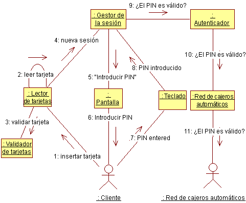

| Directriz: Taller de análisis de guión de uso |
 |
|
| Elementos relacionados |
|---|
IntroducciónEfectuar un análisis de guión de uso como tarea de grupo es importante en las iteraciones tempranas como tarea de creación del equipo, y para establecer una visión común de la arquitectura del sistema. Representa un punto de transición importante en la iteración, a medida que proporciona un puente entre la vista del sistema del usuario (representado por guiones de uso) y la vista del sistema del diseñador del sistema (representada, en este punto, por las clases de análisis). En iteraciones posteriores, o con un equipo experto, el análisis de guión de uso se puede efectuar más como tarea individual, si se efectúa. Cuando existe un modelo de diseño bien formado, puede haber menos valor al buscar nuevos objetos, ya que las clases existentes en el diseño es probable que tengan en cuenta unos comportamientos del sistema necesarios para los nuevos guiones de uso. Competencias necesariasEl taller debe organizarse como sesión de tormenta de ideas, durante la cual es necesario un amplio rango de competencia en varias áreas:
Mantenga un taller reducido: más de 6-7 personas inhibirán la participación libre y abierta de todos los miembros. Equipamiento necesario
Tiempo necesarioPlanee como mínimo unas horas por guión de uso como media. Más adelante, podrían tardar más, pero el tiempo se reducirá a medida que el número de nuevas clases caiga y el grupo gane experiencia. RolesLas responsabilidades siguientes son necesarias durante el taller. Es una buena idea rotar las responsabilidades y permitir que todo el mundo pruebe todas las responsabilidades.
Desarrollo del tallerEl equipo pasa por el flujo de sucesos del guión de uso. Para cada comportamiento identificado en el guión de uso, se identifica un objeto que proporciona el comportamiento. El objeto puede ser una instancia de una clase existente, o puede ser necesario crear la clase. El líder dibuja el diagrama de comunicación en la pizarra, y todo el mundo participa en la discusión. Cuando se ha realizado el diagrama del guión de uso, debe realizarse una copia de este en un papel de tamaño A3/legal, con los mismos colores que el diagrama de la pizarra. Al mismo tiempo, las responsabilidades de los objetos se documentan con papel A3/legal, en el formato descrito en la sección "Personalización" de Producto de trabajo: Clase de análisis. Registre las responsabilidades, sucesos y clases que colaboran con notas adhesivas; esto facilitará el desplazamiento de las responsabilidades. Dibujar diagramas de comunicaciónLos convenios siguientes facilitan la lectura y el trabajo con los diagramas durante el taller.
Dibuje un diagrama para el flujo básico del guión de uso, y diagramas adicionales para los flujos alternativos. Para guiones de uso sencillos, una única vista será suficiente para todos.  Diagrama de comunicación de ejemplo para el guión de uso Autenticar usuario en un Cajero. |
© Copyright IBM Corp. 1987, 2006. Reservados todos los derechos. |